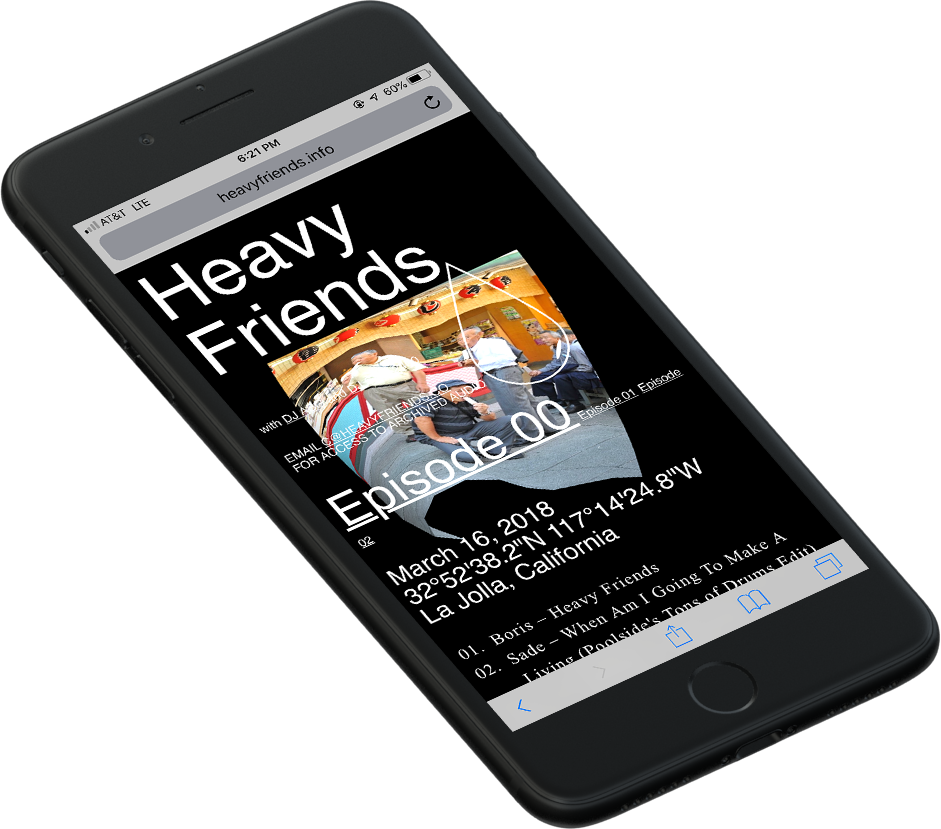
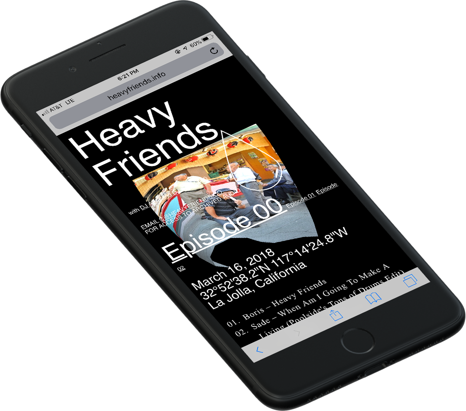
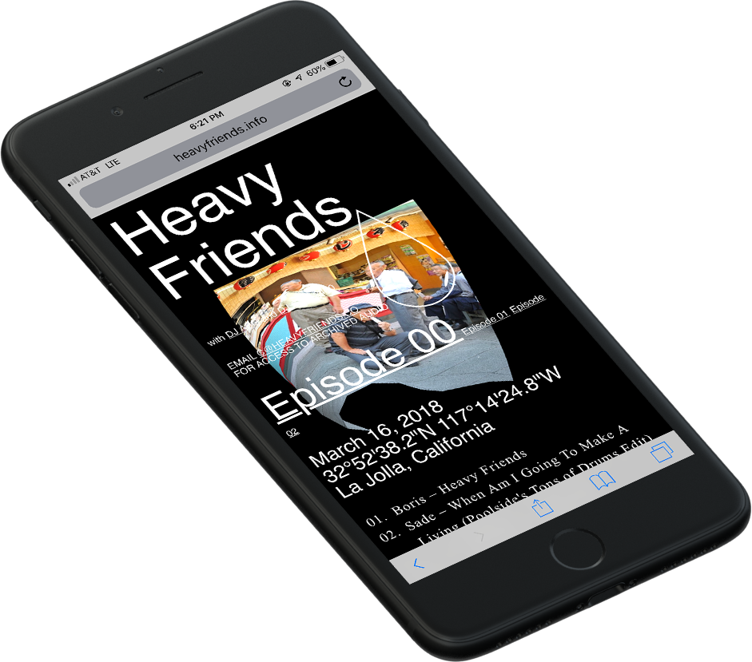

Heavy Friends
(with DJ ABG and DJ SAT -2400) was a weekly radio show based out of KSDT at UC San Diego.
Carter Duong is a designer, developer, and artist from
the Bay Area and (soon to be) based in Los Angeles.
He recently graduated from UC San Diego with a B.A.
in Interdisciplinary Computing and the Arts.
EMAIL
ARE.NA
TUMBLR
A student-run publication that celebrates the intersection of style, art, and design at UC San Diego.
A Chrome add-on developed to migrate Tumblr 'likes' to the Are.na platform.

(with DJ ABG and DJ SAT -2400) was a weekly radio show based out of KSDT at UC San Diego.
is a game about being true to yourself.